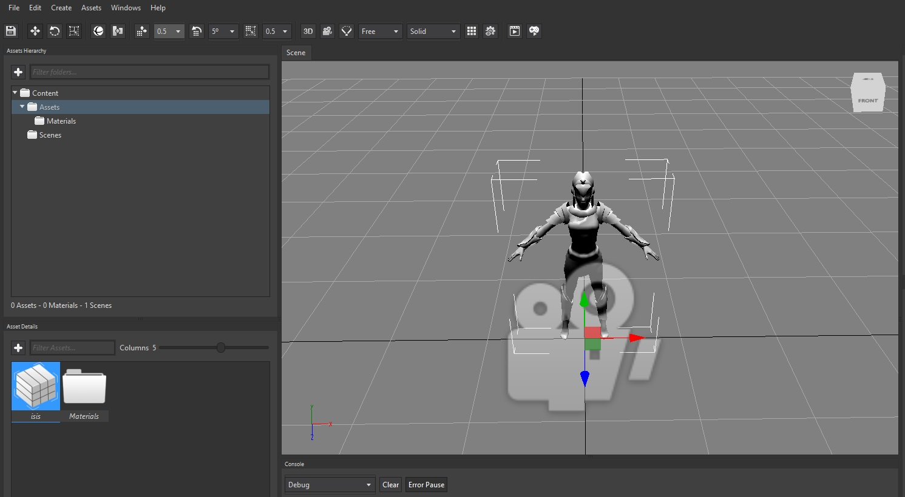
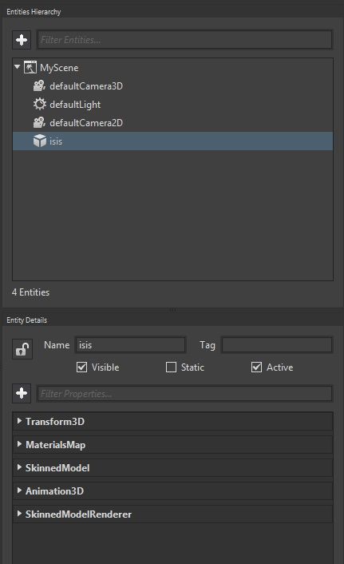

Goal
A common 3D game uses to have models (3D also) created by designers/modellers on software like 3DS Max or Blender. Models are exported in known formats so can be read from game engines. One of those formats is FBX, an standard within games industry.
In the following paragraphs, you will learn to load an .fbx model and add it into an scene.
Hands-on
With Wave Visual Editor
Create a new project with Wave Visual Editor. On the Asset Details panel, double click on Assets folder:

Right click on its empty space and select Import Asset. We will add isis.fbx file, which is part of the IsisTemple sample.
Once Wave Visual Editor has loaded the model, simply drag and drop the item into the Viewport:

With Visual Studio (for Windows or Mac)
Open the project from Visual Studio for Windows or Mac, and rebuild the solution just to update WaveContent.cs -a helper to easily reference the paths to the assets you have added in Wave Visual Editor.
There are a few pieces -components actually- needed to handle an .fbx model (appart from those needed to place an entity in a 3D world):
- SkinnedModel: in charge of loading the .fbx file, also reads the animations such file has.
- SkinnedModelRenderer: makes the final render.
- Animation3D: since our model is "skinned", it implies we want to handle its animations to trigger those in any moment of the game. This functionality is specifically covered here.
Modify your Scene.CreateScene() method in this way (notice how isis.fbx is referenced through WaveContent):
protected override void CreateScene()
{
this.Load(WaveContent.Scenes.MyScene);
var isis = new Entity()
.AddComponent(new Transform3D())
.AddComponent(new MaterialsMap())
.AddComponent(new SkinnedModel(WaveContent.Assets.isis_fbx))
.AddComponent(new Animation3D())
.AddComponent(new SkinnedModelRenderer());
this.EntityManager.Add(isis);
}
In the end, we are adding the same entity hierarchy Wave Visual Editor creates when we drag and drop the model to the scene:

Wrap-up
This recipe has guided us through what is an FBX file and how it can be loaded into Wave Engine, both visually and through source code.
Note
Take a look at this sample: Isis Temple